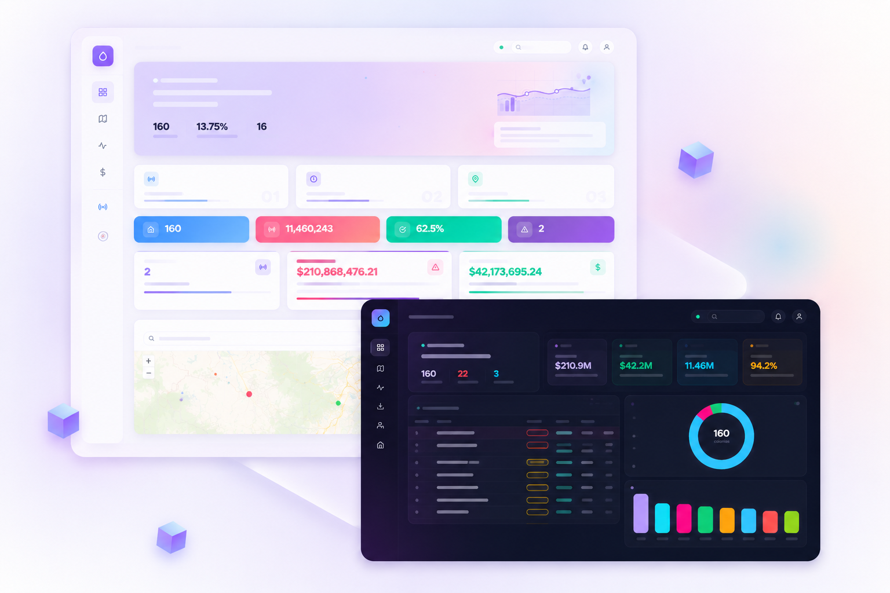

Desarrollado por PumaScript Solutions
HydroTrace AI cruza los datos de consumo, población y reportes
para mostrarte qué zonas están fallando
— y cuánto te está costando cada día que pasa.
El desafío actual
Producción y distribución siguen operando, pero sin lectura integral del comportamiento real.
Consumo, demografía y reportes viven separados. Nadie ve el patrón completo.
La intervención comienza cuando la fuga ya impactó operación y costos.
Agua no recuperada
El agua ya no solo se pierde. También se pierde capacidad de decidir dónde intervenir.
Cómo funciona
HydroTrace AI conecta fuentes que antes estaban separadas y convierte ese cruce en alertas operativas que tu equipo puede atender en minutos.
Consumo registrado, datos de población y reportes ciudadanos en una sola plataforma. Sin integraciones complejas.
Los modelos identifican zonas donde el consumo no coincide con lo esperado: señal de fuga, robo o falla técnica.
El sistema prioriza por impacto económico y operativo — para que tu equipo intervenga primero donde más se pierde.
Plataforma Operativa

¿Por qué HydroTrace AI?
Tu equipo hoy responde cuando algo ya falló. Con HydroTrace AI, prioriza antes de que escale — con datos, no con intuición.
personas
Volumen recuperable al año
menos mermas
Reducción estimada de pérdidas
para decidir
Zonas críticas identificadas al instante
Licencia SaaS · B2G
Sin sensores. Sin obra física. Sin reemplazar lo que ya tienes.
Punto de equilibrio en ~8 meses — pagado con el agua que dejas de perder.
CONTACTO
Agenda una demostración y analiza en minutos dónde podría estarse perdiendo agua.
Revisamos tu operación, entendemos el problema y te mostramos si HydroTrace AI puede ayudarte a detectar pérdidas y priorizar zonas críticas.
contacto@pumascriptsolutions.ai
Ubicación
Ciudad de México
Evaluación
Sin costo y sin compromiso
¡Solicitud recibida!
Tu solicitud fue enviada con éxito. El equipo de HydroTrace se pondrá en contacto pronto.
Ver portal ejecutivo